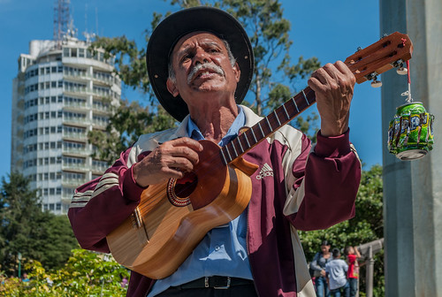
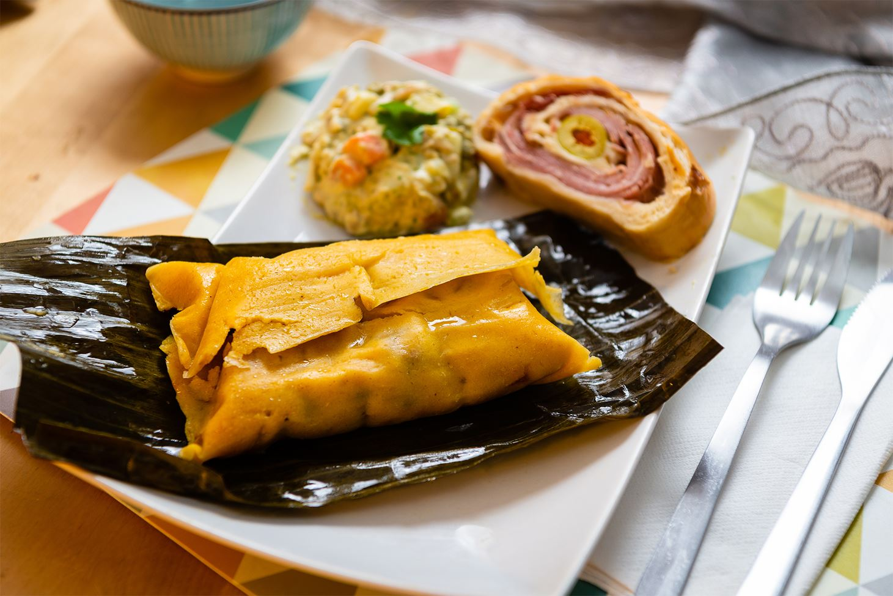
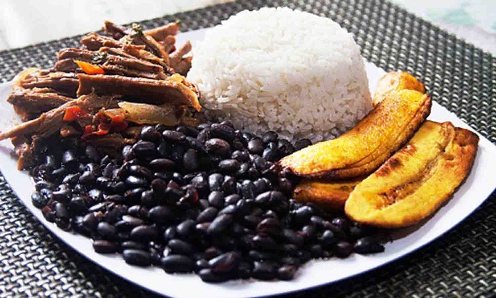
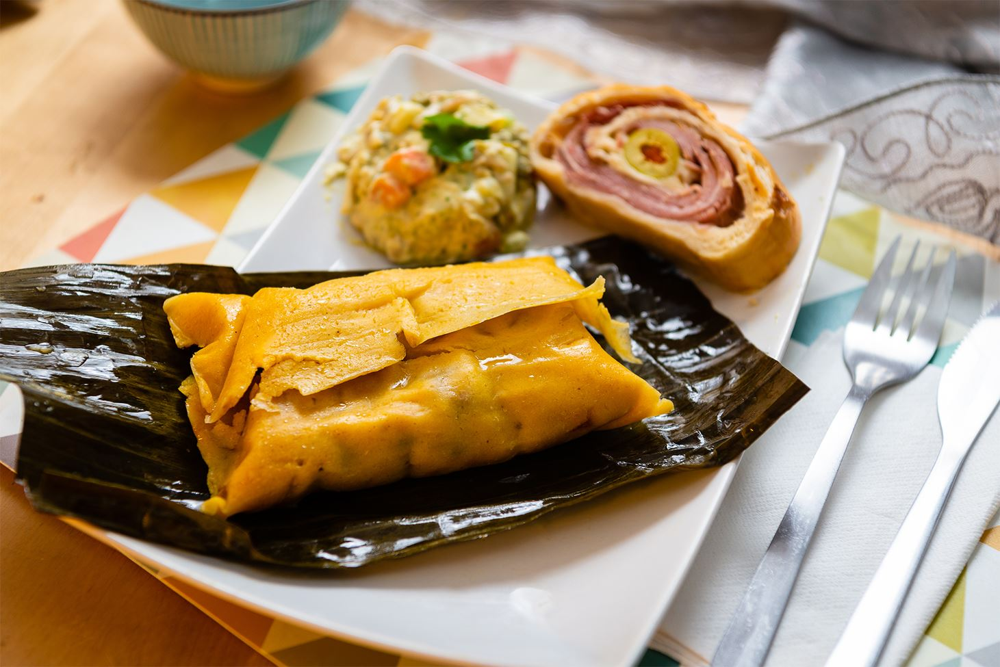
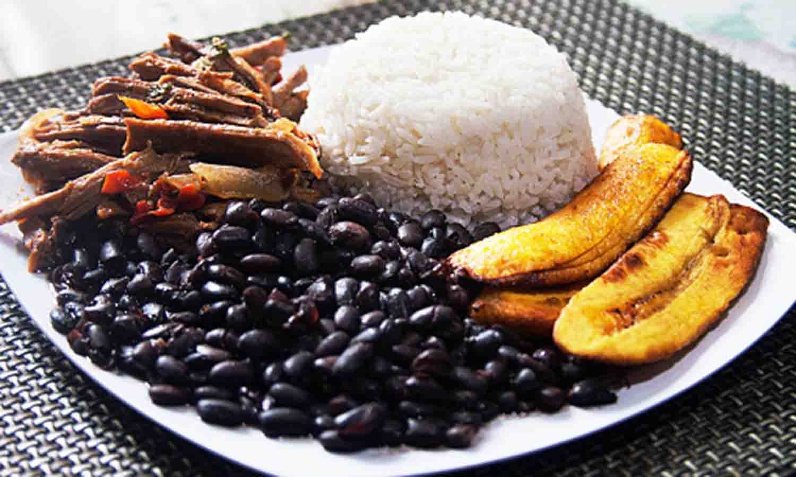

Welcome to my blog!
Hi! I'm Alejandro Hernandez, a young guy from Venezuela and here you can learn and know a little about my beauty country.
Festivals and celebrations
Venezuela is famous for its vibrant and colorful festivals such as the Barquisimeto Carnival, the Maracaibo Fair, and the Romerias de Mayo. These festivals showcase traditional music, dance, and food.
Music

Venezuelan music is a rich mixture of indigenous, African, and Spanish influences, and is a significant part of the country's cultural heritage. Styles of music include joropo, merengue, and salsa.
Food
 



Venezuelan cuisine is a mix of indigenous, Spanish, African, and Caribbean flavors and ingredients. Popular dishes include arepas, hallacas, and pabellón criollo.
Family and community values
Family is the cornerstone of Venezuelan society, and community and social relationships play a significant role in daily life.
National identity
The people of Venezuela are proud of their country and its rich cultural heritage.
Political and social issues
Venezuela has a complex political and social history and is currently facing many challenges, including economic instability and political unrest. Despite these challenges, the people of Venezuela remain resilient and maintain a strong sense of pride in their culture and heritage.